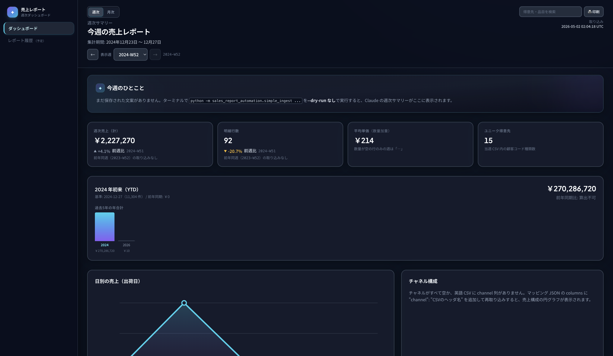
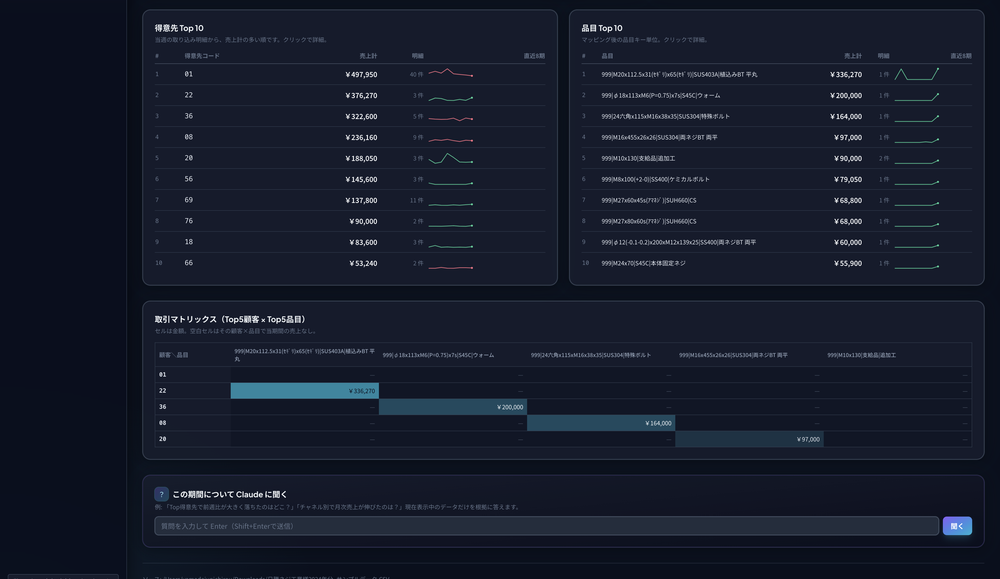

週次売上レポート自動化ツール
社内システムから出る受注 CSV を inbox に置くだけで、集計・AI 文案・メール配信・ダッシュボード表示まで自動。
完成した報告ツールの画面
ダッシュボードでは、Claude のサマリー・KPI・グラフ・Top10・取引マトリックスを一画面で確認できる。


4 つのパーツの決め方
報告ツール自動化を「トリガー・ソース元・処理する場所・届ける先」の 4 パーツに分解して設計。
CSV を inbox に置いた瞬間
watcher（フォルダ監視プログラム）が data/inbox/ を常時監視。新ファイルを 1 秒以内に検知して取り込みパイプラインを自動起動する。
社内システムの受注 CSV
社内基幹システムから出力される 1 週間分の受注明細 CSV。日本語ヘッダ・タブ区切り・8 桁日付・CP932 エンコーディングなど複数形式に対応する。
手元PC + Claude API
手元の PC で Python が CSV を SQLite に取り込み・集計・単価候補を計算。確定した数値の JSON を Anthropic Claude API に渡し、文章のみ生成させる。
Gmail + ブラウザ画面
SMTP で関係者にメール送信（件名「[週次売上] 2024-W52」+ Claude 文案 + ダッシュボード URL）。詳細はブラウザで対話的に確認できる。
この 4 パーツに分けた理由
「人間の操作を最小化する」という方針から、4 パーツの中でいちばん設計に時間をかけたのはトリガーと処理する場所です。
- ・トリガー：「毎週覚えてコマンドを打つ」運用は必ず忘れる。フォルダ監視で人間の意志に頼らない設計に。
- ・処理する場所：AI に集計させると数値がずれるリスクがあるため、数値はコードで確定し、AI には文章だけ書かせる責任分担にした。
デザインの工夫
ダッシュボードを「眺めるだけで状況がわかる」ようにするための、UI 設計のポイント 5 つ。
Claude 要約を最上段に
数字より「ストーリー」を先に見せる。紫×シアンのグラデーション枠で視線を集め、開いた瞬間に「今週どうだったか」が伝わる構成にした。
KPI に色と矢印
前週比は閾値で 5 段階に分類。+30% 以上なら緑 pill、−30% 以下なら赤 pill＋▲▼アイコン。「良い週か悪い週か」が一目でわかる。
Top10 にスパークライン
各得意先・品目の直近 8 期間の売上推移をミニチャートで併記。「Top10 だけど落ち目」を金額だけでは見えない情報として補足する。
単価欠けは独立警告カード
埋もれがちな「要対応」を琥珀色の独立カードに昇格。件数バッジ＋ CSV ダウンロードボタンで、放置されない仕組みにした。
取引マトリックス＋ヒートマップカレンダー
Top5 顧客 × Top5 品目のクロス表で「どの顧客がどの品目に強いか」、月次は日別ヒートマップカレンダーで「強い曜日・強い日」を一目で把握。テキストでは伝わりにくい関係性を視覚化した。
ぶつかった課題と解決方法
開発中に出てきた問題と、どう解決したか。
AI に直接レポートを書かせると数字がずれる（ハルシネーション）
解決
数値はコード、文章は AIと役割分担を明確化。Python で集計を完全に確定し、JSON にして Claude へ渡す。プロンプトに「JSON にある数値以外は使うな」と明示し、文章だけを生成させる。
CSV の形式が顧客ごとに違う（日本語/英語ヘッダ・列順・タブ区切り）
解決
正規スキーマ＋マッピング JSONで吸収。内部で扱う列は customer_code, product_code, quantity, unit_price, amount, ship_date の 6 つに固定。各 CSV の方言は JSON ファイル 1 つで「日付 → ship_date」のように対応付ける。新形式が来ても集計コードは触らない。
単価が空欄の行があり、平均単価などの集計が壊れる
解決
5 段階のフォールバックで候補を自動算出。具体的な情報から徐々に抽象的な情報へ降りる。
- ① 同一顧客 × 同一品目の過去最新価格
- ② 同一顧客 × 同一材質の過去最新価格
- ③ 同期間の同先 × 材質 平均価格
- ④ 同期間の同品目 平均価格
- ⑤ 金額 ÷ 数量 の逆算（最終手段）
「データがないからわからない」と諦めず、ある情報から最良の候補を出す。どの根拠で出したか画面に表示するので、最終判断は人間ができる。
「今週」の境界（ISO 月曜 0:00）が業務感覚と合わない
解決
JST 月曜 8:00 起算の「運用週」を独自定義してコード上に明示。月曜朝 7 時の出荷は前週扱いになり、月曜朝レポートで「先週ぶん」が正しくまとまる。標準仕様より業務感覚を優先した。
毎週ターミナルでコマンドを打つ運用は、忙しい週に必ず忘れる
解決
macOS の launchd で watcher を常駐。PC 起動と同時に自動で動き出し、data/inbox/ に CSV を置けば検知して処理が走る。人間がやるのはドラッグ＆ドロップ 1 回だけ。
まとめ — 設計で大事にした3つの考え方
AI に任せるのは「人間が苦手なこと」だけ
数字の計算は AI が苦手。文章は AI が得意。役割分担を明確にすると、AI を業務で安心して使える。
過去データは「文脈」になる
「データがないからわからない」と諦めない。フォールバックで段階的に候補を出すと、最低限の妥当な値が手に入る。
「忘れない仕組み」が一番強い
毎週覚えて操作する運用は必ず破綻する。常駐＋フォルダ投下＋失敗時の自動退避で、人間の意志に頼らない設計にした。